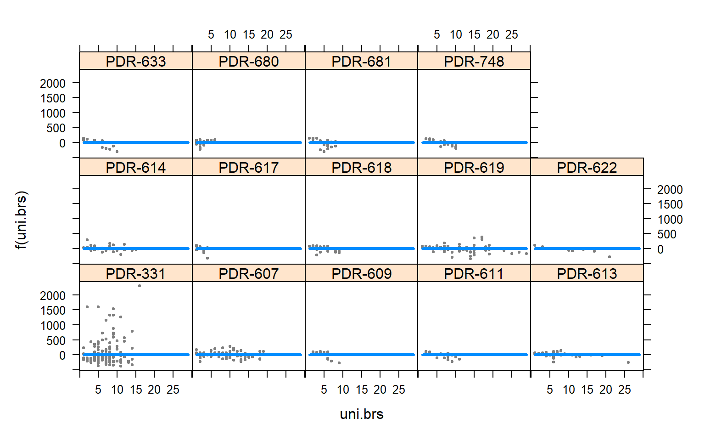
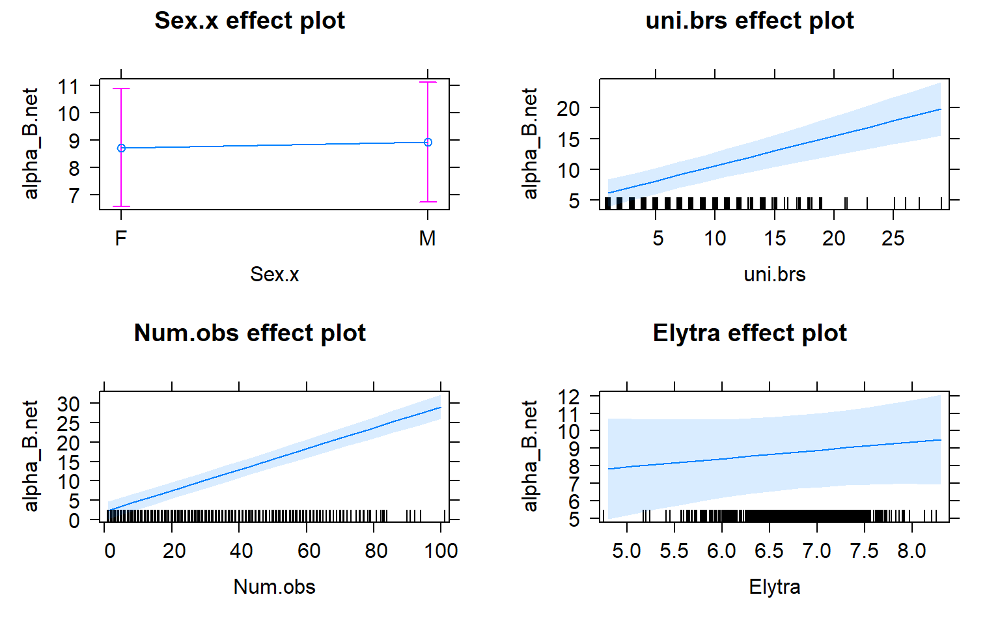
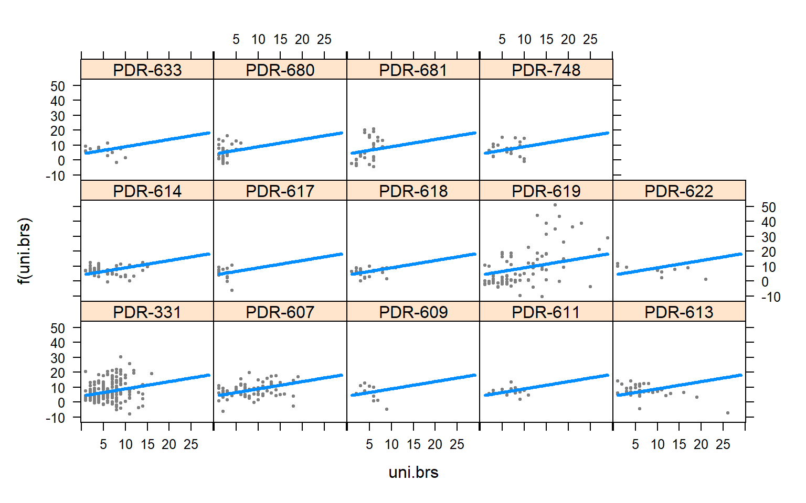
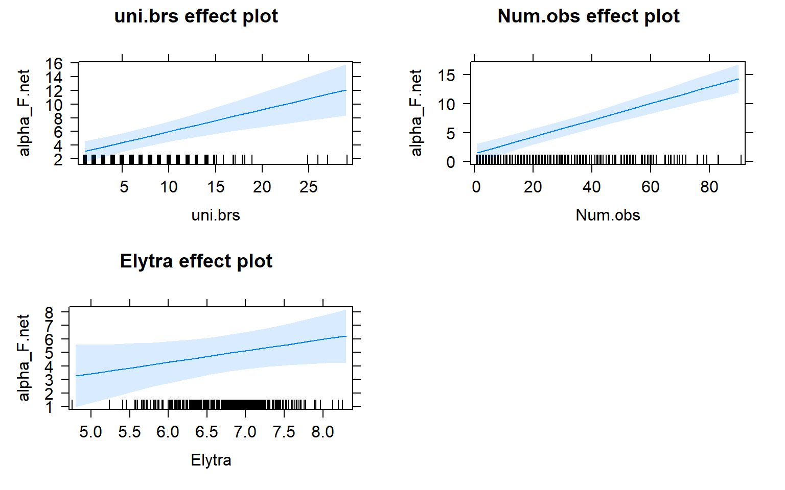
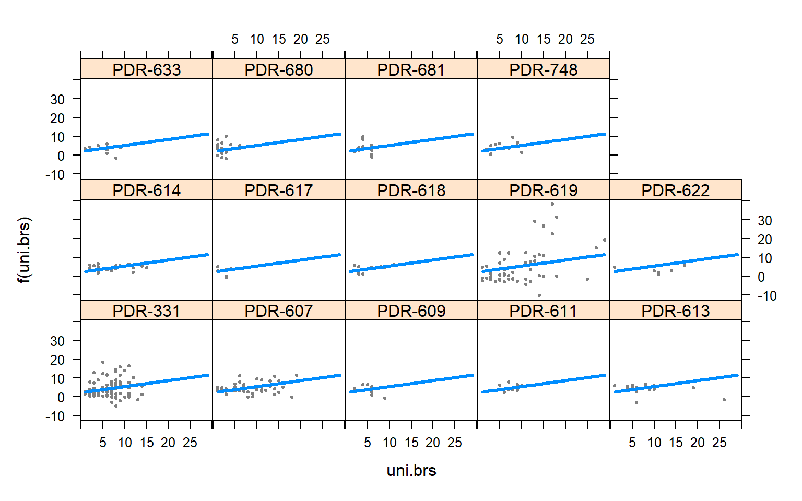
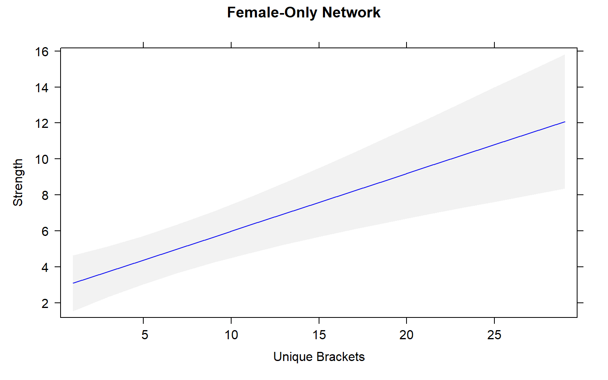

Mountain Lake Biological Station, 6/8/2018.
Abstract
Because social interactions depend strongly on the positions of the interacting individuals, studying how movement affects those social interactions could give us a better understanding of where individuals fit within their societies. While previous work has shown that centrality metrics like strength and betweenness are significantly influenced by morphological traits, little is known about how these centrality metrics are affected by movement. We performed a general linear mixed model analysis to determine whether movement among mating arenas predicted strength and betweenness within forked fungus beetle (Bolitotherus cornutus) populations. In the analysis, sex, elytra size, and number of observations were used as fixed effects while population was used as a random effect. Our results showed that despite being highly correlated, strength and betweenness are affected by movement differently. Sex-specific social networks proved to be the most significant source of variation among the results with male-only social networks yielding consistent results across both centrality metrics. Additionally, although the effects of movement on strength in all social networks fell within our expectations, the effects of movement on male-only betweenness highlights a unique feature of male-only social interactions.
Sources and Acknowledgements
This project was made possible because of the efforts of Butch Brodie, Hannah Donald Cannon, Phoebe Cook, Robin Costello, and the members of Beetle Crew at Mountain Lake Biological Station.
The survey, attribute, and centrality metrics data were obtained from Beetle Crew’s collection of data. For more information about the data, please contact Dr. Vincent Formica (vformic1@swarthmore.edu).
See poster references for information about the research papers that motivated this project.
Data and Preparation
Data Set 1: The survey data measures observations of forked fungus beetles in the field.
Data Set 2: Beetle attribute data measures beetle characteristics like physical traits and capture information.
Data Set 3: Centrality metric data measures social network metrics like strength and betweenness.
The objective at this stage is to measure beetle movement using the number of unique fungus brackets beetles were observed on.
This will be accomplished by:
- Filtering out beetles that were not observed on fungal brackets.
- Counting the observations of unique beetles on unique fungal brackets.
- Counting the number of unique brackets per beetle.
- Merging beetle attributes and centrality metrics with the movement data.
Load data and libraries.
setwd("C:/Users/laryl/Desktop/Data Sets")
#Load Libraries
library(lattice)
library(knitr)
library(plyr)
library(doBy)
library(effects)
library(visreg)
library(lme4)
library(ggplot2)
library(car)
library(lsmeans)
#load the data from survey using a vector
raw_data_2017<-read.csv("2017_Surveys_20180419_1355_Cedric.csv")
raw_data.att<-read.csv("Beetle_Attributes_20180419_1355.csv")
raw_data_2017_0<-raw_data_2017[raw_data_2017$Date_Surveys > 20160000 & raw_data_2017$Date_Surveys < 20170000,]
head(raw_data_2017_0)Step 1: Filter for beetles on fungal brackets.
#Get rid of rows with no beetles and rows with blanks
#raw_data_2017_2<-raw_data_2017[raw_data_2017 $ No.Beetles!= "No Beetles :(",]
raw_data_2017_2<-raw_data_2017_0[raw_data_2017_0$No.Beetles =="",]
#Filter out beetle location variable that we only beetles on fungus are counted
raw_data_2017_3<- raw_data_2017_2[raw_data_2017_2$Location != "BARK",]
raw_data_2017_4<- raw_data_2017_3[raw_data_2017_3$Location != "SEE NOTES",]
raw_data_2017_5<- raw_data_2017_4[raw_data_2017_4$Location != "",]
# Go through and clean up the data frame when we done filtering
raw_data_2017_6<- droplevels(raw_data_2017_5)
head(raw_data_2017_6)#Rename field id variables
names(raw_data_2017_6)[names(raw_data_2017_6) == "ï.._fkfieldID_surveys"]<- "X_fkfieldID_surveys"
names(raw_data.att)[names(raw_data.att) == "ï..__pkfieldID"]<- "X__pkfieldID"Step 2: Count unique observations of beetles on unique fungal brackets
#Make a new data frame with unique rows for a combination of columns
raw_data_2017_9<- unique(raw_data_2017_6[,c("X_fkfieldID_surveys","ScanID","Bracket_surveys","X_fkPopulation_surveys")])
#obs.scan.ID<-summaryBy(ScanID~FFB.ID+ScanID+Bracket_surveys,FUN=length,data=raw.data.2017.bigpops)
# NOW count number of scans a beetle was obs using the table you made
scans.per.beetle<-summaryBy(ScanID~ X_fkfieldID_surveys +X_fkPopulation_surveys, FUN=length,data=raw_data_2017_9)
#make a new column that combines ID and Population
scans.per.beetle$ID_Pop<-paste(scans.per.beetle$X_fkfieldID_surveys,scans.per.beetle$X_fkPopulation_surveys, sep= "_")
head(scans.per.beetle)Step 3: Count unique fungal brackets per beetle.
#Data frame of list of unique brackets for HBY
unique.br<-unique(raw_data_2017_9[raw_data_2017_9$X_fkfieldID_surveys== "HBY",c("Bracket_surveys")])
View(unique.br)
# Data frame of list of unique brackets for each beetle ID accounting for populations
unique.br.per.beetle<-unique(raw_data_2017_9[,c("Bracket_surveys","X_fkfieldID_surveys","X_fkPopulation_surveys")])
#It showed up as value so you need to hit view cause it is a vector
View(unique.br.per.beetle)
#This is the unique number of brackets for every beetle (completed!)> I used 9 instead of the correct condensed form.
unique.br.counts<-summaryBy(Bracket_surveys~ X_fkfieldID_surveys+ X_fkPopulation_surveys, FUN=length, data=unique.br.per.beetle)
#make a new columnn that combines ID and Population
unique.br.counts$ID_Pop<-paste(unique.br.counts$X_fkfieldID_surveys,unique.br.counts$X_fkPopulation_surveys, sep= "_")
head(unique.br.counts)Step 4: Merge observations of beetles on unique brackets and unique bracket data frames along with beetle attributes.
#merging
merge.1<-merge(scans.per.beetle,unique.br.counts, by= "ID_Pop",all = TRUE)
#Getting rid of unnecessary columns
merge.2<-merge.1[,c(1:4,7)]
merge.3<-rename(merge.2, c("X_fkPopulation_surveys.x"="Pop", "X_fkfieldID_surveys.x"="FFB.ID", "ScanID.length"="Num.obs", "Bracket_surveys.length"="uni.brs"))
merge.4<-merge(merge.3, raw_data.att, by.x= "FFB.ID",by.y ="X__pkfieldID", all.x = TRUE, all.y= FALSE)
head(merge.4)Merge centrality metrics with the movement and attribute data
#loading the the betweenness data
setwd("C:/Users/laryl/Desktop/Data Sets")
raw_data.bet<- read.csv("Network_output_TO=N_MP=N_BSCAN=Y__FROM_20160606-20160801_Created_20170725.csv")
# Attempt to condence to very specific columns
raw_data.bet2<- raw_data.bet[,c(1:13,20:38)]
#Get rid of unlabled bettles
merge.5<-merge.4[merge.4$FFB.ID != "UK",]
merge.6<-merge.5[merge.5$FFB.ID != "UKF",]
merge.7<-merge.6[merge.6$FFB.ID != "UKM",]
merge.8<-merge.7[merge.7$FFB.ID != "UL",]
merge.9<-merge.8[merge.8$FFB.ID != "ULF",]
merge.10<-merge.9[merge.9$FFB.ID != "ULM",]
merge.11<- droplevels(merge.10)
#merged betweenness and merge.11
merge.12<-merge(merge.11, raw_data.bet2, by.x = "ID_Pop",by.y = "ID_pop", all.x = TRUE, all.y = FALSE)
head(merge.12)Analysis
### Betweenness Joint
mod3<-lmer(betweenness_B.net~ (1|Pop.x)+ Sex.x+uni.brs + Num.obs + Elytra, data= merge.12 )
summary(mod3)## Linear mixed model fit by REML ['lmerMod']
## Formula: betweenness_B.net ~ (1 | Pop.x) + Sex.x + uni.brs + Num.obs +
## Elytra
## Data: merge.12
##
## REML criterion at convergence: 8484.6
##
## Scaled residuals:
## Min 1Q Median 3Q Max
## -1.6533 -0.5312 -0.0434 0.2394 9.6971
##
## Random effects:
## Groups Name Variance Std.Dev.
## Pop.x (Intercept) 6122 78.24
## Residual 55969 236.58
## Number of obs: 617, groups: Pop.x, 14
##
## Fixed effects:
## Estimate Std. Error t value
## (Intercept) -56.21321 124.05636 -0.453
## Sex.xM 23.95885 19.84359 1.207
## uni.brs 0.05388 2.92456 0.018
## Num.obs 5.06782 0.58186 8.710
## Elytra -5.22969 17.93773 -0.292
##
## Correlation of Fixed Effects:
## (Intr) Sex.xM un.brs Num.bs
## Sex.xM 0.076
## uni.brs -0.054 0.091
## Num.obs -0.022 -0.067 -0.621
## Elytra -0.971 -0.153 -0.019 -0.007Anova(mod3, type=3)mod3_effects<-allEffects(mod3)
plot(mod3_effects, "uni.brs",xlab="Unique Brackets", ylab="Betweenness",main="Joint Network",rug=FALSE,colors= "red", band.colors= "dark grey")plot(allEffects(mod3))visreg(mod3,"uni.brs",by="Pop.x")
#### Betweenness Males x males
mod3.males<-lmer(betweenness_M.net~ (1|Pop.x)+uni.brs + Num.obs + Elytra, data= merge.12 )
summary(mod3.males)## Linear mixed model fit by REML ['lmerMod']
## Formula: betweenness_M.net ~ (1 | Pop.x) + uni.brs + Num.obs + Elytra
## Data: merge.12
##
## REML criterion at convergence: 3022.4
##
## Scaled residuals:
## Min 1Q Median 3Q Max
## -1.5166 -0.4790 -0.0154 0.2009 6.8033
##
## Random effects:
## Groups Name Variance Std.Dev.
## Pop.x (Intercept) 868.3 29.47
## Residual 6962.2 83.44
## Number of obs: 259, groups: Pop.x, 14
##
## Fixed effects:
## Estimate Std. Error t value
## (Intercept) -10.1612 69.2405 -0.147
## uni.brs 3.2375 1.6295 1.987
## Num.obs 0.7061 0.2936 2.405
## Elytra -1.7313 9.9772 -0.174
##
## Correlation of Fixed Effects:
## (Intr) un.brs Num.bs
## uni.brs -0.122
## Num.obs 0.102 -0.591
## Elytra -0.983 0.051 -0.131Anova(mod3.males, type=3)mod3.male_effects<-allEffects(mod3.males)
plot(mod3.male_effects, "uni.brs",xlab="Unique Brackets", ylab="Betweenness", main="Male-Only Network",rug=FALSE,colors= "red", band.colors= "dark grey" )plot(allEffects(mod3.males))
visreg(mod3.males,"uni.brs",by="Pop.x")##### Betweenness Females X Female
mod3.females<-lmer(betweenness_F.net~ (1|Pop.x)+uni.brs + Num.obs + Elytra, data= merge.12 )
summary(mod3.females)## Linear mixed model fit by REML ['lmerMod']
## Formula: betweenness_F.net ~ (1 | Pop.x) + uni.brs + Num.obs + Elytra
## Data: merge.12
##
## REML criterion at convergence: 4380.6
##
## Scaled residuals:
## Min 1Q Median 3Q Max
## -1.5701 -0.4805 -0.0790 0.1522 8.1062
##
## Random effects:
## Groups Name Variance Std.Dev.
## Pop.x (Intercept) 1123 33.51
## Residual 12262 110.73
## Number of obs: 358, groups: Pop.x, 14
##
## Fixed effects:
## Estimate Std. Error t value
## (Intercept) -6.9476 76.3505 -0.091
## uni.brs -0.2735 1.7476 -0.156
## Num.obs 2.1787 0.3840 5.674
## Elytra -3.8127 11.0728 -0.344
##
## Correlation of Fixed Effects:
## (Intr) un.brs Num.bs
## uni.brs 0.019
## Num.obs -0.127 -0.638
## Elytra -0.981 -0.083 0.092Anova(mod3.females, type=3)#merge.12$stand_unibr<-scaleBy(uni.brs~Pop.x, data=merge.12)
mod3.females_effects<-allEffects(mod3.females)
plot(allEffects(mod3.females))visreg(mod3.females,"uni.brs",by="Pop.x")plot(mod3.females_effects, "uni.brs",xlab="Unique Brackets", ylab="Betweenness",main="Female-Only Network",rug=FALSE,colors= "red", band.colors= "dark grey" )### Strength Joint
mod4<-lmer(alpha_B.net~ (1|Pop.x)+ Sex.x+uni.brs + Num.obs + Elytra, data= merge.12 )
summary(mod4)## Linear mixed model fit by REML ['lmerMod']
## Formula: alpha_B.net ~ (1 | Pop.x) + Sex.x + uni.brs + Num.obs + Elytra
## Data: merge.12
##
## REML criterion at convergence: 4124.9
##
## Scaled residuals:
## Min 1Q Median 3Q Max
## -3.6031 -0.5801 -0.0650 0.4697 5.8052
##
## Random effects:
## Groups Name Variance Std.Dev.
## Pop.x (Intercept) 14.19 3.767
## Residual 44.27 6.654
## Number of obs: 617, groups: Pop.x, 14
##
## Fixed effects:
## Estimate Std. Error t value
## (Intercept) -4.33988 3.58698 -1.210
## Sex.xM 0.21670 0.55898 0.388
## uni.brs 0.48709 0.08379 5.814
## Num.obs 0.26942 0.01655 16.280
## Elytra 0.47967 0.50504 0.950
##
## Correlation of Fixed Effects:
## (Intr) Sex.xM un.brs Num.bs
## Sex.xM 0.075
## uni.brs -0.052 0.089
## Num.obs -0.021 -0.067 -0.628
## Elytra -0.945 -0.153 -0.019 -0.008Anova(mod4, type=3)mod4_effects<-allEffects(mod4)
plot(mod4_effects, "uni.brs",xlab="Unique Brackets", ylab="Strength",main="Joint Network",rug=FALSE,colors= "blue", band.colors= "dark grey")plot(allEffects(mod4))
visreg(mod4,"uni.brs",by="Pop.x")
### Strength Male x Male
mod4.males<-lmer(alpha_M.net~ (1|Pop.x)+ uni.brs + Num.obs + Elytra, data= merge.12 )
summary(mod4.males)## Linear mixed model fit by REML ['lmerMod']
## Formula: alpha_M.net ~ (1 | Pop.x) + uni.brs + Num.obs + Elytra
## Data: merge.12
##
## REML criterion at convergence: 1306.9
##
## Scaled residuals:
## Min 1Q Median 3Q Max
## -2.7697 -0.6058 -0.0320 0.5216 3.7224
##
## Random effects:
## Groups Name Variance Std.Dev.
## Pop.x (Intercept) 6.470 2.544
## Residual 7.744 2.783
## Number of obs: 259, groups: Pop.x, 14
##
## Fixed effects:
## Estimate Std. Error t value
## (Intercept) 3.39496 2.40567 1.411
## uni.brs 0.12861 0.05660 2.272
## Num.obs 0.08092 0.01005 8.051
## Elytra -0.46352 0.33575 -1.381
##
## Correlation of Fixed Effects:
## (Intr) un.brs Num.bs
## uni.brs -0.127
## Num.obs 0.114 -0.599
## Elytra -0.948 0.060 -0.148Anova(mod4.males, type=3)mod4.male_effects<-allEffects(mod4.males)
plot(mod4.male_effects, "uni.brs",xlab="Unique Brackets", ylab="Strength", main="Male-Only Network",rug= FALSE, colors= "blue", band.colors= "dark grey")plot(allEffects(mod4.males))visreg(mod4.males,"uni.brs",by="Pop.x")### Strength Female x female
mod4.females<-lmer(alpha_F.net~ (1|Pop.x)+uni.brs + Num.obs + Elytra, data= merge.12 )
summary(mod4.females)## Linear mixed model fit by REML ['lmerMod']
## Formula: alpha_F.net ~ (1 | Pop.x) + uni.brs + Num.obs + Elytra
## Data: merge.12
##
## REML criterion at convergence: 2160
##
## Scaled residuals:
## Min 1Q Median 3Q Max
## -3.5791 -0.5057 -0.0525 0.3385 6.4452
##
## Random effects:
## Groups Name Variance Std.Dev.
## Pop.x (Intercept) 5.008 2.238
## Residual 22.643 4.758
## Number of obs: 358, groups: Pop.x, 14
##
## Fixed effects:
## Estimate Std. Error t value
## (Intercept) -6.52799 3.32663 -1.962
## uni.brs 0.32116 0.07705 4.168
## Num.obs 0.14456 0.01678 8.615
## Elytra 0.84959 0.47743 1.780
##
## Correlation of Fixed Effects:
## (Intr) un.brs Num.bs
## uni.brs 0.028
## Num.obs -0.133 -0.650
## Elytra -0.971 -0.090 0.097Anova(mod4.females, type=3)mod4.female_effects<-allEffects(mod4.females)
plot(allEffects(mod4.females))
visreg(mod4.females,"uni.brs",by="Pop.x")
plot(mod4.female_effects, "uni.brs",xlab="Unique Brackets", ylab="Strength",main="Female-Only Network",rug=FALSE,colors= "blue", band.colors= "dark grey")
Conclusions
Movement by individual beetles across mating arenas affects their centrality in male-male networks. Specifically, there is a significant positive relationship between male-male centrality metrics and movement.
The presence of females within a social network seems to strongly influence the relationship between movement and centrality metrics. While male-male social interactions are always affected by movement, in joint (two sex) and female-only networks the relationship between movement and centrality is not always significant.
Joint networks and female-only network appear to mimic each other.
See poster for more complete conclusions.